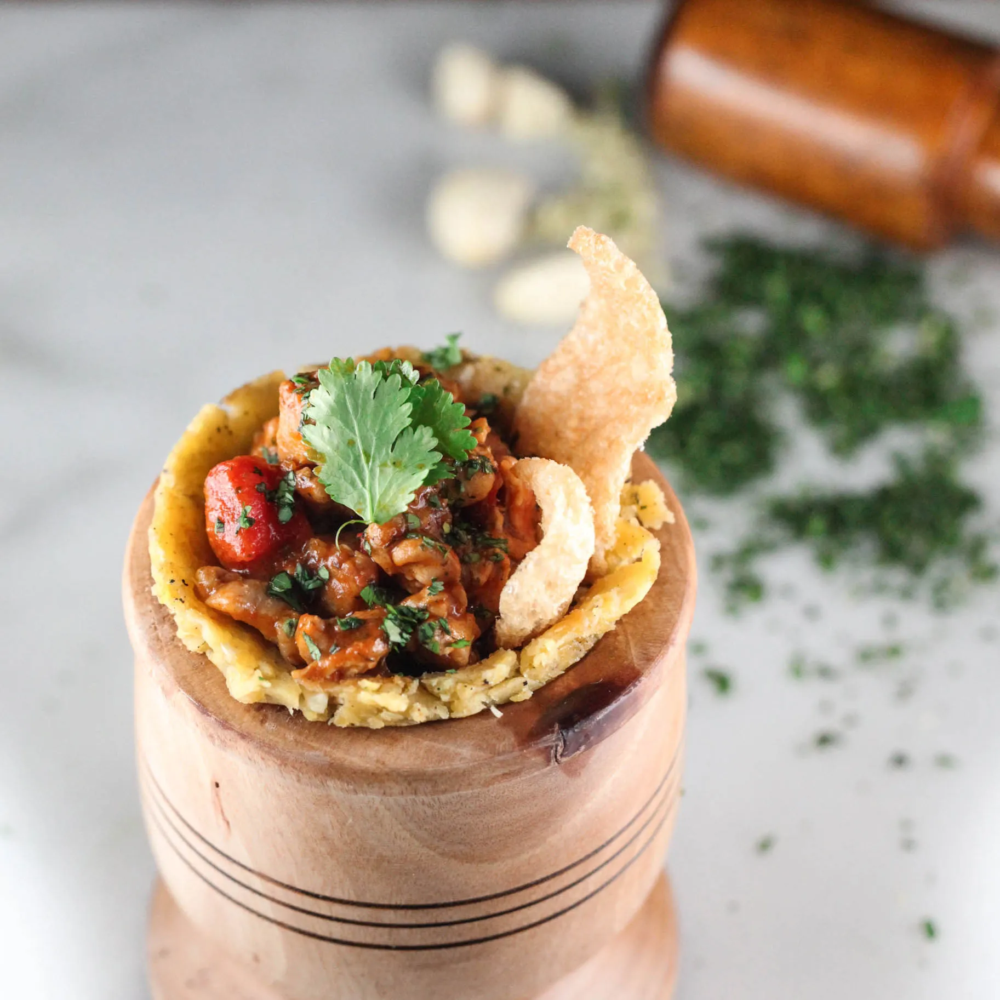

Mofongo

Description
Mofongo might not look like much, but it sure is tasty. This traditional Puerto Rican dish is made with mashed green plantains with garlic, olive oil and pork rinds (or bacon). Mofongo goes well with chicken or fish broth and can be stuffed with garlic shrimp, carne frita or octopus salad. It can also be formed into small balls and dropped in soups or served directly in a mortar. This is one of my many guilty pleasures!
You can make this version of the dish with a food processor, but for even more authentic flavor, use a pilón, or a wooden mortar and pestle.
Ingredients
- Vegetable Oil (about 8 cups)
- 4 unripe plantains, peeled, sliced 1/2 inches thick (about 5 cups)
- 2 garlic cloves
- 1/2 teaspoon adobo seasoning
- Kosher salt, freshly ground pepper
Steps
- Fit a large pot with deep-fry thermometer; pour in vegetable oil to a depth of 2".
- Heat over medium-high until thermometer registers 375°. Fry plantains, turning occasionally, until golden brown, about 4 minutes.
- Transfer to a paper towel-lined rimmed baking sheet to drain.
- Using the bottom of a glass or small skillet, press plantains to flatten.
- Transfer flattened plantains to mortar and pestle and add garlic and adobo; season with salt and pepper. Mash until softened and well combined.
- Divide mofongo among 4 small bowls, pressing and molding into bottom and up sides of bowls.
- Fill with chicken stew and garnish with cilantro and pork rinds, if using.